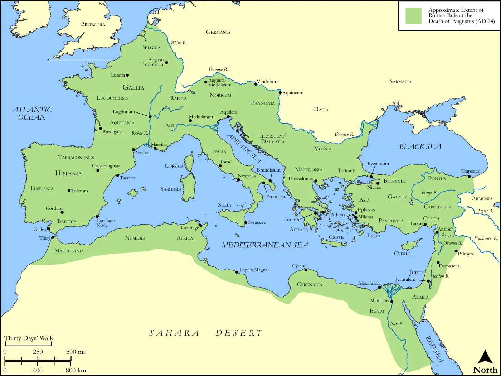
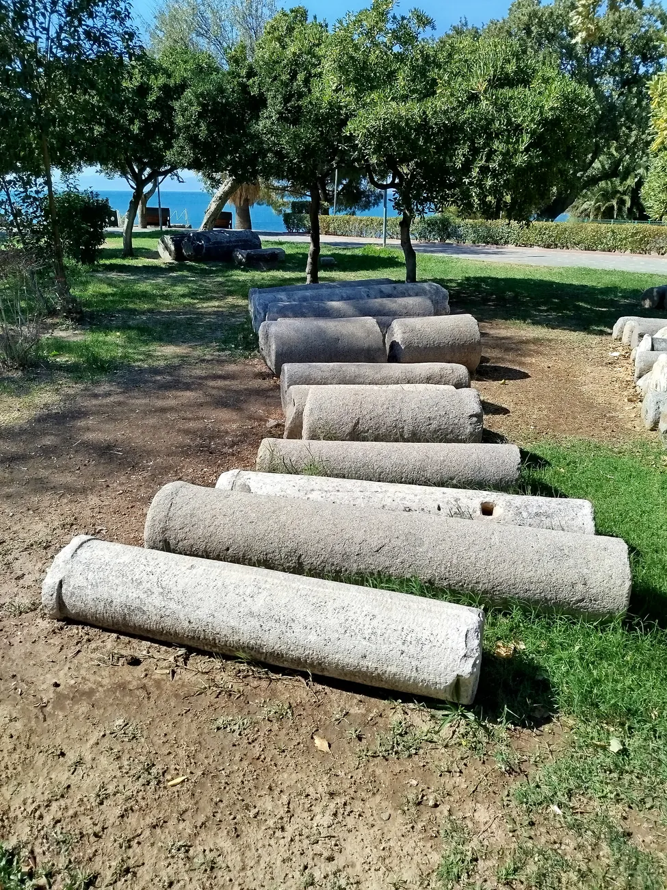
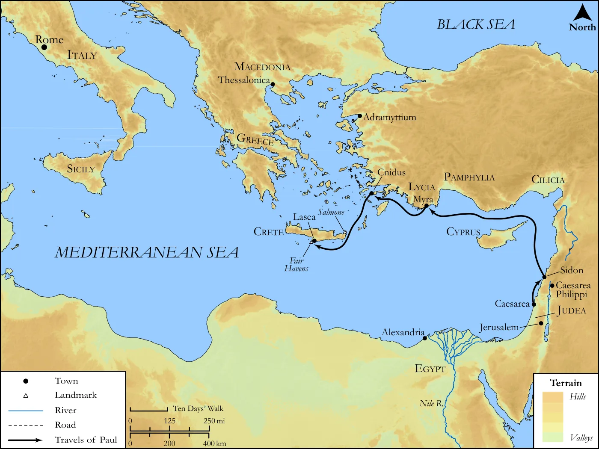
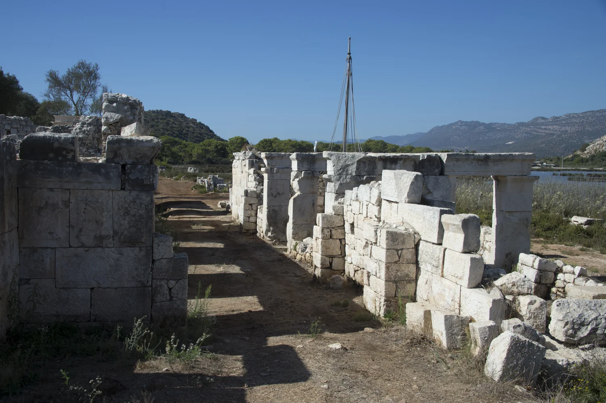
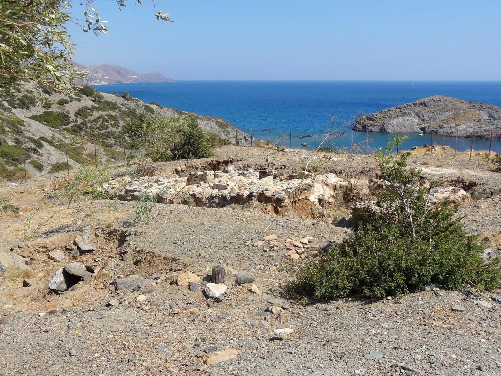
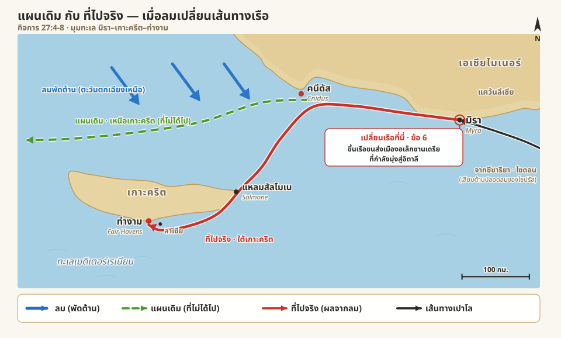

เพื่อนแท้ ที่ยอมลงเรือลำเดียวกัน
เปาโลถูกส่งตัวลงเรือไปโรมในฐานะนักโทษ เจอลมพัดต้านจนต้องหลบเลาะทีละเกาะอย่างยากเย็น แต่ท่ามกลางการเดินทางที่ยากลำบากนั้น มีนายร้อยที่เมตตาเขาเกินหน้าที่ มีเพื่อนที่เมืองไซดอนคอยดูแล และมีสหายที่ยังอยู่เคียงข้างเปาโลมาตลอดการเดินทางครั้งนี้
iความหมายของเครื่องหมายในบทความ
กิจการ 27:1-8ลองนึกภาพชายที่ถูกล่ามโซ่ ยืนอยู่บนเรือที่กำลังออกจากฝั่งมุ่งหน้าไปกรุงโรม ลมทะเลพัดสวนมาแรงจนเรือแล่นแทบไม่ไป — นั่นคือเปาโลในตอนนี้ แต่สิ่งที่ค้างอยู่ในใจผมกลับไม่ใช่คลื่นลม มันคือคำเล็ก ๆ คำเดียวที่บอกว่าเขาไม่ได้อยู่บนเรือลำนั้นตามลำพัง
“เรา” — คำเล็ก ๆ ที่บอกว่าเปาโลไม่ได้ไปคนเดียว
เรื่องเริ่มตรงที่มีมติให้ออกเรือไปอิตาลี เปาโลกับนักโทษคนอื่น ๆ ถูกส่งตัวให้นายร้อยชื่อยูเลียส ซึ่งพระคัมภีร์บอกว่าสังกัด “กองทหารของจักรวรรดิ”[1] คำในภาษาเดิม (กรีก) คือกองทหารที่มีชื่อตามจักรพรรดิโดยตรง1

จักรวรรดิโรมันสมัยพระเยซู

แล้วมีอีกจุดที่ผมประทับใจมาก คือลูกาไม่ได้เล่าว่า “เปาโลถูกส่งตัวลงเรือ” เฉย ๆ เขาเล่าว่า “เมื่อมีมติให้ เรา ลงเรือ” คำว่า “เรา” นี้สำคัญ เพราะมันบอกว่าคนเล่าเรื่องอยู่ในเหตุการณ์จริง อยู่บนเรือลำนั้นด้วยตัวเอง2 ไม่ใช่คนนอกที่มาเรียบเรียงเรื่องทีหลัง
พวกเขาขึ้นเรือลำหนึ่งที่พระคัมภีร์เรียกว่า “เรือจากเมืองอัดรามิททิยุม”[2] ตรงนี้อ่านแล้วชวนงงนิดหน่อย เพราะฟังดูเหมือนพวกเขาออกเดินทางจากเมืองอัดรามิททิยุม ทั้งที่จริงพวกเขาลงเรือกันที่เมืองซีซารียาตามที่เล่ามาก่อนหน้านี้ คำในภาษาเดิมหมายถึง “เรือแห่งเมืองอัดรามิททิยุม” คือเรือที่มีเมืองท่าต้นทางอยู่ที่นั่น3 เหมือนเวลาเราบอกว่าเรือมาจากเมืองไหน — มันบอกที่จดทะเบียนของเรือ ไม่ใช่จุดที่ผู้โดยสารขึ้นเรือ เรือลำนี้กำลังจะแล่นเลียบชายฝั่งกลับขึ้นเหนือไปตามเมืองท่าในแคว้นเอเชีย นายร้อยเลยอาศัยเรือลำนี้พานักโทษออกเดินทางไปก่อน

ซากเมืองอาดรามิททิยุม

{kind=link}
แล้วลูกาก็เอ่ยชื่อเพื่อนอีกคนที่ไปด้วยกัน — “อาริสทารคัส ชาวมาซิโดเนียจากเมืองเธสะโลนิกา” อาริสทารคัสเป็นเพื่อนร่วมทางที่เคยเดินทางและรับใช้กับเปาโลมาก่อนหน้านี้4 เธสะโลนิกาอยู่ในแคว้นมาซิโดเนีย ซึ่งไกลจากเส้นทางนี้มาก การที่ลูกาตั้งใจจดชื่อเขาไว้ ทั้งที่กำลังเล่าเรื่องนักโทษกับทะเล ก็เหมือนเป็นการให้เกียรติคนที่ยังอยู่เคียงข้างเปาโลมาตลอดการเดินทางครั้งนี้
น้ำใจของนายร้อย กับเพื่อนที่เมืองไซดอน
วันรุ่งขึ้นเรือก็มาถึงเมืองไซดอน และตรงนี้เองที่มีคำงาม ๆ ซ่อนอยู่ในภาษาเดิมถึงสามคำในข้อเดียว พระคัมภีร์บอกว่ายูเลียส “เมตตา” เปาโล[3] คำในภาษาเดิมคือ philanthrōpōs (φιλανθρώπως) ภาพเดิมของรากศัพท์มาจากคำว่า “รัก” บวกกับคำว่า “มนุษย์” คือความรักที่มีต่อเพื่อนมนุษย์5 เป็นรากเดียวกับคำว่า philanthropy ที่ฝรั่งใช้เรียกการทำการกุศล ในบริบทนี้มันหมายถึงการปฏิบัติต่อคนอื่นด้วยน้ำใจ เห็นเขาเป็นเพื่อนมนุษย์คนหนึ่ง ไม่ใช่ทำแค่ตามหน้าที่
แล้วน้ำใจนั้นก็ออกมาเป็นการกระทำ — ยูเลียสอนุญาตให้เปาโลขึ้นฝั่งไปหา philos (φίλος) หรือ “เพื่อนฝูง” เพื่อจะได้รับการดูแลจัดหาสิ่งจำเป็น คำว่า philos ไม่ได้แปลว่าคนรู้จักผ่าน ๆ แต่หมายถึงเพื่อนที่รักและสนิทกัน ส่วนคำว่า “จัดหาสิ่งจำเป็น” ในภาษาเดิมคือ epimeleia (ἐπιμέλεια) หมายถึงการเอาใจใส่ดูแลอย่างดี6 ไม่ใช่แค่ยื่นของให้แล้วจบ
พอต่อสามคำนี้เข้าด้วยกันก็เห็นภาพงดงาม คือน้ำใจของนายทหารโรมันคนหนึ่งเปิดทางให้นักโทษได้ไปพบเพื่อนที่รัก และได้รับการดูแลอย่างอบอุ่นก่อนออกไปสู้กับคลื่นลม พระคัมภีร์ไม่ได้บอกว่าทำไมยูเลียสถึงใจดีกับเปาโลขนาดนี้ บอกแค่ว่าเขาทำจริง ๆ — แค่นั้นก็พอแล้ว
ผมรู้สึกด้วยว่าพอมาถึงตอนนี้ ลูกาเหมือนค่อย ๆ เปลี่ยนโหมดการเล่า จากความตึงเครียดในคุกและในศาลที่ยืดเยื้อมาหลายบท มาเป็นความอบอุ่นของมิตรภาพและน้ำใจที่ค่อย ๆ ห้อมล้อมเปาโลเข้ามา อ่านแล้วรู้สึกได้ถึงความผ่อนคลายเล็ก ๆ ก่อนที่คลื่นลมจริงจะเริ่ม
ลมที่พัดต้านตลอดทาง
แต่พอออกจากไซดอน ความอบอุ่นก็ต้องเจอบททดสอบจริง เพราะลมเริ่มพัดต้าน เรือต้องแล่นไป “ด้านปลอดลม” ของเกาะไซปรัส[4] คำว่าด้านปลอดลมคือการแล่นชิดด้านที่มีตัวเกาะบังลมไว้ให้ อาศัยเกาะเป็นกำแพงกันลมที่พัดสวนมา7 แค่ข้อนี้ก็บอกแล้วว่าการเดินทางไม่ราบรื่น ต้องคอยหลบคอยเลี่ยงตั้งแต่ต้น

เส้นทางเรือของเปาโลจากซีซารียาสู่เกาะครีต

จากนั้นเรือก็แล่นข้ามทะเลนอกชายฝั่งแคว้นซิลีเซียกับปัมฟีเลียไปถึงเมืองมิรา[5] คำว่า “ทะเล” ตรงนี้ในภาษาเดิมใช้คำเฉพาะว่า pelagos (πέλαγος) คือทะเลเปิด ผืนน้ำลึกกว้างใหญ่จนมองไม่เห็นฝั่ง8 ช่วงนี้เรือต้องแล่นตัดข้ามใจกลางทะเลลึก ไม่ได้เลาะเลียบชายฝั่งเหมือนช่วงก่อน

ท่าเรืออันดรีอาเก เมืองมิรา แคว้นลีเซีย

{kind=link}
พอถึงเมืองมิรา นายร้อยก็เจอเรืออีกลำจากเมืองอเล็กซานเดรียที่กำลังจะไปอิตาลี เลยย้ายทุกคนขึ้นเรือลำใหญ่นั้น[6] (ก็เป็นรูปแบบเดียวกับ “เรือแห่งเมือง” ที่เจอตอนต้น คือเรือที่มีต้นทางจากอเล็กซานเดรีย) แต่ลมก็ยังไม่เข้าข้างพวกเขา เรือแล่นเชื่องช้าอยู่ “หลายวัน” กว่าจะมาถึงเมืองคนีดัส “ด้วยความลำบาก”[7] คำว่าหลายวันในภาษาเดิมสื่อถึงช่วงเวลานานพอสมควร9 และคำว่า “ด้วยความลำบาก” คือคำว่า molis (μόλις) แปลว่าอย่างยากเย็น แทบไม่สำเร็จ
 เรือสินค้าโรมันบรรทุกข้าว (โมเดลจำลอง)
เรือสินค้าโรมันบรรทุกข้าว (โมเดลจำลอง)

{kind=link}
แล้วลูกาก็ใช้คำว่า molis นี้ซ้ำอีกเป็นครั้งที่สอง ตอนแล่นเลียบเกาะครีต[8] เมื่อลมแรงจนแล่นตรงต่อไปไม่ไหว พวกเขาต้องเบนเข้าไปแล่นด้านปลอดลมของเกาะครีต แล้วเลียบฝั่งไปอย่างยากเย็นกว่าจะมาถึงที่จอดชื่อ “ท่างาม” ใกล้เมืองลาเซีย การย้ำคำว่า “ยากเย็น” ถึงสองหน เหมือนลูกากำลังบอกเราว่าทุกช่วงของการเดินทางตอนนี้ต้องออกแรงสู้จริง ๆ ทั้งที่ยังไม่ทันถึงช่วงพายุใหญ่ด้วยซ้ำ

ซากเมืองลาเซีย เกาะครีต

{kind=link}
ลองดูภาพเส้นทางทั้งหมดพร้อมกัน จะเห็นชัดว่าลมเปลี่ยนแผนการเดินทางไปอย่างไร — เส้นเขียวประคือเส้นทางปกติที่ตั้งใจจะแล่นไปทางตะวันตกเหนือเกาะครีต แต่ลมพัดต้านจนต้องเบนลงไปแล่นด้านใต้ของเกาะแทน (เส้นแดง):

เส้นทางเรือ กจ.27:4-8 — ลมพัดเรือหลงจากแผนเดิม
![แผนที่แสดงมุมทะเลระหว่างเมืองมิราในเอเชียไมเนอร์ทางขวา เกาะครีตที่ทอดยาวอยู่ตรงกลางค่อนไปทางล่าง และท่างามทางใต้ของเกาะ ลูกศรสีน้ำเงินสามอันชี้ลงมาจากทิศตะวันตกเฉียงเหนือแทนลมที่พัดต้าน เส้นสีเขียวประลากจากเมืองคนีดัสไปทางตะวันตกเหนือเกาะครีตแทนเส้นทางปกติที่ตั้งใจจะไปแต่ไปไม่ได้ เส้นสีแดงทึบลากจากเมืองมิราผ่านคนีดัสแล้วเบนลงใต้ผ่านแหลมสัลโมเนที่ปลายด้านตะวันออกของเกาะครีต เลียบชายฝั่งทางใต้ไปยังท่างามใกล้เมืองลาเซีย และเส้นสีดำเข้าสู่เมืองมิราจากทางตะวันออกเฉียงใต้ มีคำอธิบายสัญลักษณ์ มาตราส่วนหนึ่งร้อยกิโลเมตร และลูกศรชี้ทิศเหนือ](..\assets/figures/acts-27-route-crete.svg "ดูเต็มจอ / ซูม")
เปาโลในฐานะนักโทษถูกส่งลงเรือไปโรม อยู่ในความดูแลของนายร้อยยูเลียสที่ปฏิบัติต่อเขาด้วยน้ำใจ เห็นเขาเป็นคนคนหนึ่ง ไม่ใช่แค่นักโทษ ทั้งเส้นทางเป็นการต่อสู้กับลมที่พัดต้าน — ต้องหลบด้านปลอดลมของไซปรัส ตัดข้ามทะเลเปิด เปลี่ยนเรือที่มิรา แล้วแล่นอย่างยากเย็นกว่าจะถึงคนีดัสและท่างาม แต่ท่ามกลางความลำบากนั้น มีเส้นด้ายของมิตรภาพร้อยอยู่เงียบ ๆ — คำว่า “เรา” ที่บอกว่าผู้เล่าอยู่ในเหตุการณ์ด้วย อาริสทารคัสที่ยังตามเปาโลมาตลอดการเดินทางครั้งนี้ และเพื่อนที่เมืองไซดอนที่คอยดูแลเขาอย่างเอาใจใส่ อ่านทั้งตอนต่อกันแล้วจะเห็นว่า เปาโลไม่ได้เดินทางอย่างโดดเดี่ยวเลย
สิ่งที่ผมประทับใจในวันนี้
อ่านตอนนี้จบ สิ่งที่ค้างอยู่ในใจผมมากที่สุดคือภาพของเพื่อน คำว่า “เรา” ในเรื่องนี้ทำให้ผมนึกออกว่าเปาโลไม่ได้ถูกลากลงเรือไปเจอทะเลอย่างเดียวดาย ยังมีลูกาอยู่ด้วย และมีอาริสทารคัสที่ตามมาจากเธสะโลนิกาแดนไกล อยู่เคียงข้างเปาโลมุ่งหน้าไปในการเดินทางที่ไม่มีใครรู้ว่าปลายทางจะเป็นตายร้ายดีอย่างไร นั่นไม่ใช่มิตรภาพธรรมดา คนที่จะยอมทิ้งความสบาย มาอยู่บนเรือลำเดียวกับเพื่อนในวันที่เพื่อนตกเป็นนักโทษ ต้องรักและสนิทกันลึกจริง ๆ
ไม่ใช่แค่ทุกข์ด้วยกันสุขด้วยกัน แต่เป็นการยอมเป็นยอมตายไปด้วยกัน อยู่เคียงข้างกันไม่ใช่แค่ในวันที่ทุกอย่างราบรื่น แต่ในวันที่ต้องออกเรือไปเจอลมพายุที่ไม่รู้ว่าจะได้กลับมาไหม ภาพนี้ทำให้ผมสะเทือนใจ เพราะในชีวิตคริสเตียน เราต้องการเพื่อนแบบนี้จริง ๆ — เพื่อนที่ไม่หายไปในวันที่เราลำบาก
และพอคิดต่อ ผมก็อยากเป็นเพื่อนแบบนั้นให้คนอื่นได้บ้าง ไม่ใช่แค่มีเพื่อนที่คอยอยู่ข้างเราตอนลำบาก แต่เป็นคนที่พร้อมจะลงเรือลำเดียวกับเพื่อนในวันที่เขากำลังเจอมรสุมของชีวิต การอยู่เคียงข้างกันเงียบ ๆ ในวันที่ยากที่สุด บางทีก็มีค่ามากกว่าคำปลอบใจเป็นร้อยประโยค
Footnotes
กองทหารที่ยูเลียสสังกัดคือ speira Sebastēs (σπεῖρα Σεβαστῆς) คำว่า Sebastos (Σεβαστός) แปลว่า “ผู้ทรงเกียรติ / สูงส่ง” เป็นคำที่ใช้เป็นตำแหน่งของจักรพรรดิโรมัน จึงหมายถึงกองทหารในสังกัดของจักรพรรดิ (น่าจะเป็นหน่วยทหารเสริม (auxiliary) ที่ได้รับตำแหน่งกิตติมศักดิ์ตามจักรพรรดิ ไม่ใช่กองทัพหลัก) — ดู BDAG หัวข้อ Σεβαστός↩︎
ในภาษาเดิมข้อนี้ผู้เขียนเปลี่ยนมาเล่าด้วยสรรพนามบุรุษที่หนึ่งพหูพจน์ hēmas (ἡμᾶς) “เรา/พวกเรา” ซึ่งเป็นสัญญาณว่าผู้เขียน (ตามธรรมเนียมเชื่อว่าคือลูกา) ร่วมอยู่ในเหตุการณ์และเดินทางไปด้วยตนเอง ไม่ใช่เพียงเรียบเรียงจากคำบอกเล่า↩︎
คำว่า Adramyttēnos (Ἁδραμυττηνός, G98) เป็นคำคุณศัพท์แปลว่า “แห่งเมืองอัดรามิททิยุม” ซึ่งเป็นเมืองท่าในแคว้นมิเซีย คำนี้ขยาย “เรือ” เพื่อบอกเมืองท่าต้นทางของเรือ ไม่ได้บอกว่าเป็นจุดที่คณะเดินทางลงเรือ — ดู BDAG หัวข้อ Ἁδραμυττηνός↩︎
อาริสทารคัส (Aristarchos, Ἀρίσταρχος, G708) ชาวมาซิโดเนียจากเมืองเธสะโลนิกา เป็นเพื่อนร่วมทางของเปาโลที่ปรากฏชื่อเดินทางและรับใช้ร่วมกับท่านมาก่อนหน้านี้ ทั้งในเหตุจลาจลที่เมืองเอเฟซัส กิจการ 19:29 ↗ และในคณะที่ร่วมเดินทางกับเปาโล กิจการ 20:4 ↗ · ดูประวัติทั้งหมดของเขาได้ในหน้าอาริสทารคัส — เพื่อนร่วมทางที่ไม่ทิ้งเปาโล↩︎
philanthrōpōs (φιλανθρώπως, G5364) เป็นคำวิเศษณ์ ความหมายในบริบทคือ “อย่างมีน้ำใจ อย่างเมตตา” ส่วนภาพเดิมของรากศัพท์มาจาก philos (φίλος, รัก) รวมกับ anthrōpos (ἄνθρωπος, มนุษย์) จึงมีภาพของความรักที่มีต่อเพื่อนมนุษย์ เป็นรากของคำภาษาอังกฤษ philanthropy — ใช้กับการปฏิบัติต่อผู้อื่นด้วยความเมตตาเกินกว่าที่หน้าที่บังคับ — ดู BDAG หัวข้อ φιλανθρώπως↩︎
philos (φίλος, G5384) หมายถึง “เพื่อนที่รัก สหายสนิท” ไม่ใช่คนรู้จักผิวเผิน ส่วน epimeleia (ἐπιμέλεια, G1958) หมายถึง “การเอาใจใส่ดูแล การต้อนรับดูแลกันอย่างดี” — ดู BDAG หัวข้อ φίλος / ἐπιμέλεια↩︎
“ด้านปลอดลม” มาจากคำกริยา hypopleō (ὑποπλέω, G5284) แปลว่า “แล่นเรือด้านใต้ลมของ” คือแล่นชิดด้านที่ตัวเกาะช่วยบังลมที่พัดสวนมา — ดู BDAG หัวข้อ ὑποπλέω↩︎
pelagos (πέλαγος, G3989) หมายถึง “ทะเลเปิด ทะเลลึก” ผืนน้ำกว้างที่มองไม่เห็นฝั่ง ต่างจาก thalassa (θάλασσα) ที่เป็นคำว่าทะเลทั่วไป ในข้อนี้จึงเป็นการระบุว่าเรือตัดข้ามทะเลเปิดนอกชายฝั่งซิลีเซียและปัมฟีเลีย แทนที่จะเลาะเลียบชายฝั่งอย่างช่วงก่อน เป็นข้อเท็จจริงทางภูมิศาสตร์ ไม่ได้สื่อความหมายแฝงเกินกว่านั้น — ดู BDAG หัวข้อ πέλαγος↩︎
molis (μόλις, G3433) เป็นคำวิเศษณ์แปลว่า “อย่างยากลำบาก แทบไม่สำเร็จ หวุดหวิด” ลูกาใช้คำนี้ซ้ำสองครั้ง (ข้อ 7 มาถึงคนีดัส และข้อ 8 แล่นเลียบเกาะครีต) เป็นการย้ำว่าการเดินทางช่วงนี้ฝืดและยากจริง ๆ ส่วนคำว่า “หลายวัน” มาจาก hikanais hēmerais (ἱκαναῖς ἡμέραις, G2425/G2250) สื่อถึงช่วงเวลาที่ยาวนานพอสมควร — ดู BDAG หัวข้อ μόλις / ἱκανός↩︎